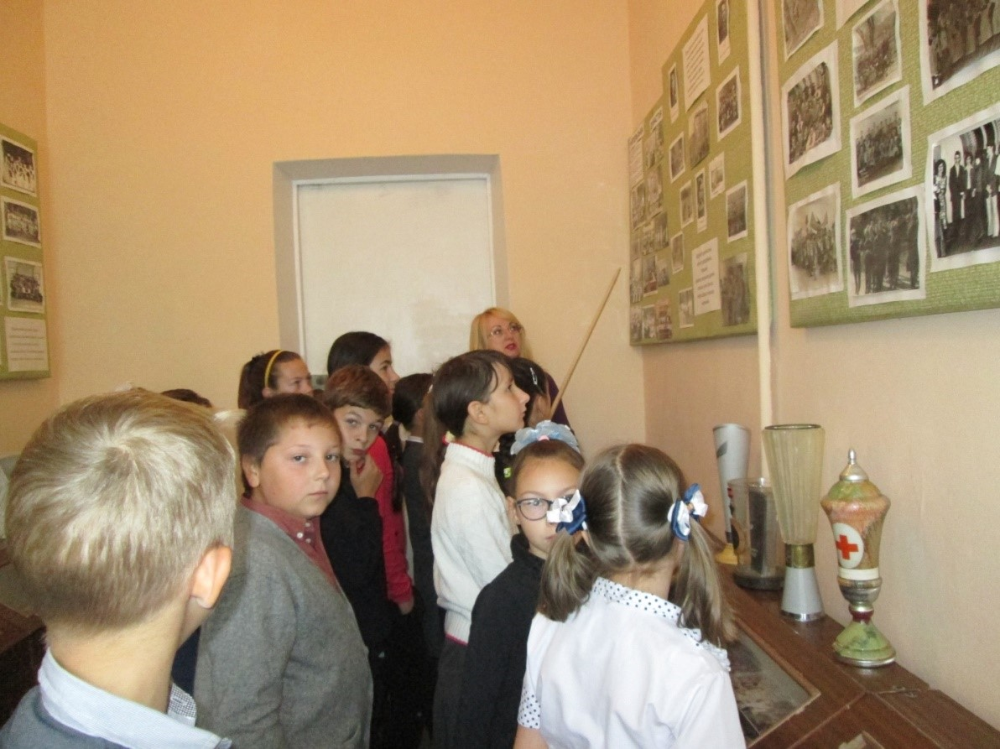
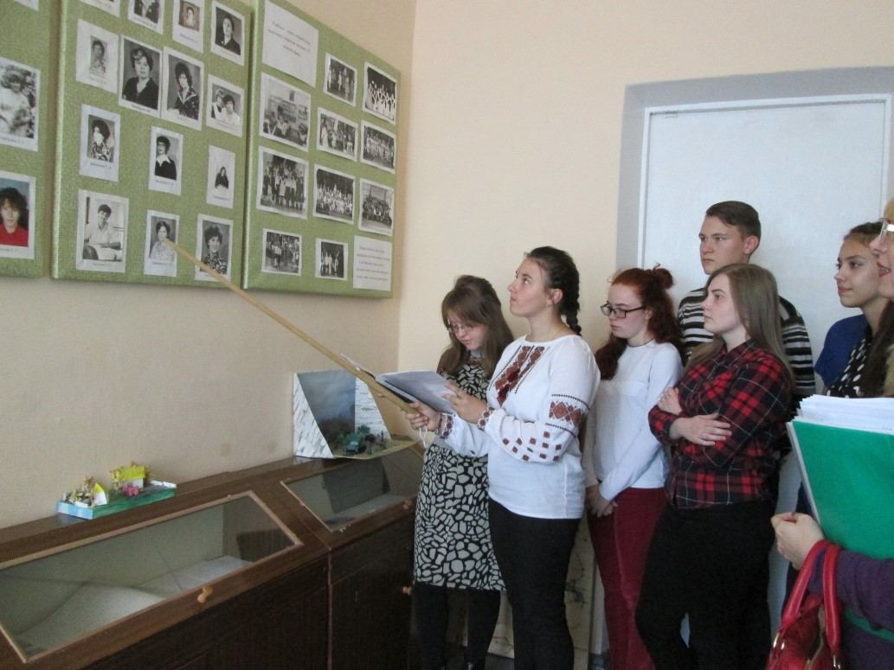
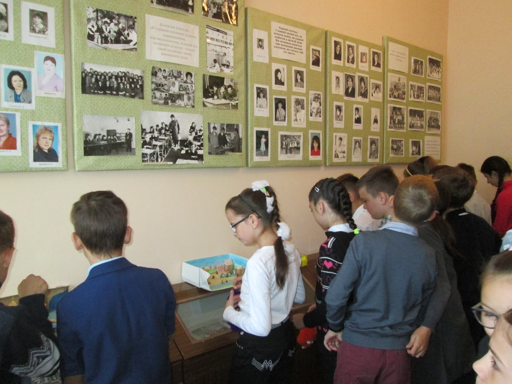

м. Світловодськ, Кіровоградська область
Музей історії школи при Комунальному закладі "Ліцей №4 "Обрій" (раніше НВК «Гімназія-загальноосвітня школа I-III ступенів № 4») є осередком патріотичного та культурного виховання учнівської молоді. Двері музею завжди гостинно відчинені для школярів, педагогів, випускників та гостей міста.
Початок заснування музейної кімнати припадає на 1985 рік за ініціативи Заболотньої Ганни Іванівни, яка за допомогою учнів та батьків організувала першу кімнату зі стендами в аудиторії №17. Реконструкції та перенесення музею відбулися у 2008–2009 роках (ауд. №35), у 2015–2016 роках (ауд. №7), у 2020–2021 роках (ауд. №35) під керівництвом вчителя історії Кобильської Ольги Юріївни.
Кобильська Ольга Юріївна — вчитель історії вищої категорії. Вона активно залучає учнів до вивчення історії рідного краю та розкриття невідомих сторінок життя нашої школи.


